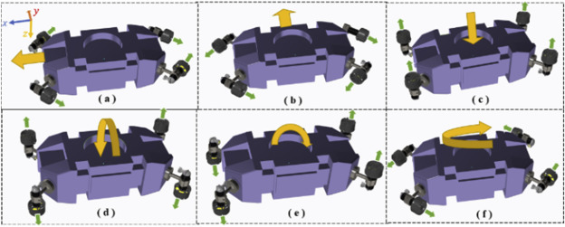
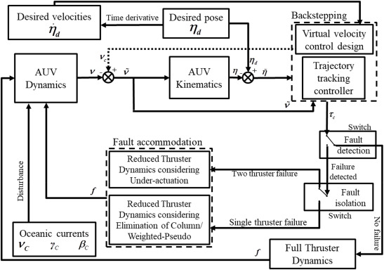
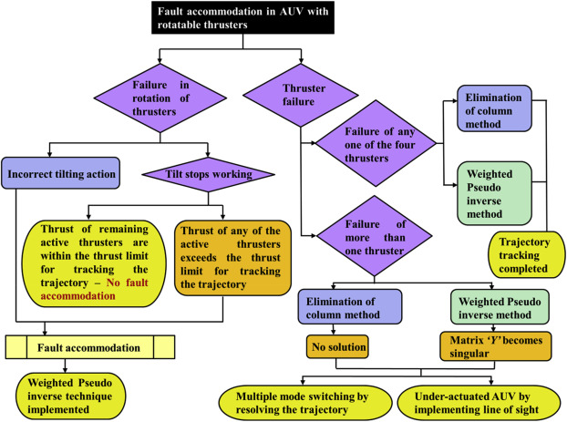
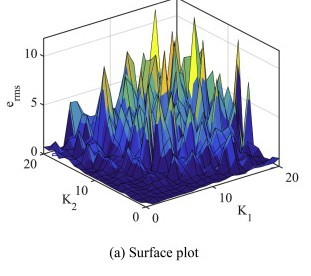
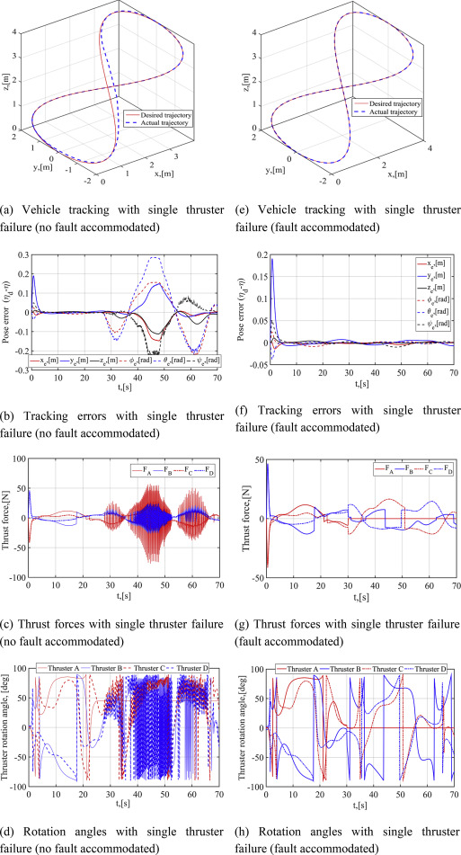

|
Research Experience
Design, Control & Hydrdynamic Analysis of an Autonomous Underwater Vehicle (AUV) using rotatable thrusters
Preparation of mechanical design of an autonomous underwater vehicle with modular structure capable of accommodating fixed as well as rotating thrusters using SolidWorks. Design prepared on the concept of prevention of leakage using appropriate O-rings, cost efficiency, robust and practically feasible design. Existing backstepping control scheme modified to take Fault Tolerance Control (FTC) of one thruster into consideration using two mathematical techniques- Elimination of Column method & Weighted Pseudo Inverse method. Subsequently accommodation of partial faults, diversification of faults was done. Improvement of existing control scheme by simulating oceanic currents and incorporation of thruster force limits into the model. For failure of more than one thruster, underactuated control of the AUV using RLESO+ADRC and Line-of-sight method was also attempted.
 |
 |
 |
 |
Hydrodynamic analysis of hull along with thrusters was done using CFD based techniques to re-calculate the Added Mass & Damping Matrix and validate the analytical results. 
Control of Lower Limb Gait Rehabilitation Robot
Interfacing MATLAB and arduino for motion control of the prototype of a lower-limb gait rehabilitation robot to be used for stroke patients
Mathematical modelling done using MATLAB and Simulink, taking into consideration the Inverse Kinematics of the mechanism based on the planar hybrid manipulator system of the robot Learnt the basics of mathematical modelling and Manipulator Kinematics, fundamentals of image processing using OpenCV, Python and design fundamentals using SolidWorks
|